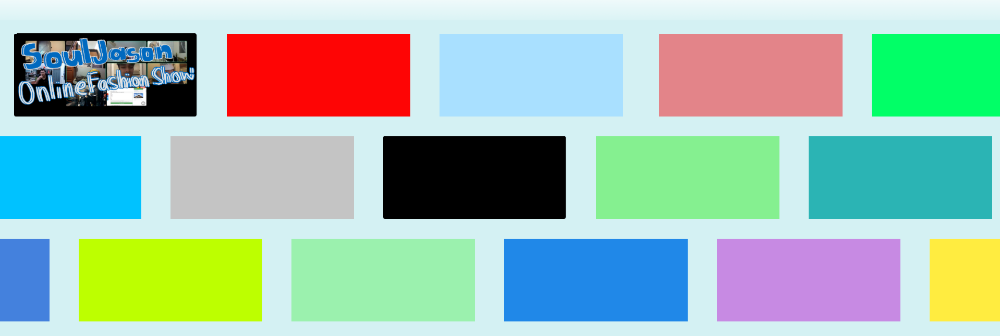

OneCase
A Personal Archive + Social Network
Let OneCase serve as your one-stop shop to display all your favorite projects and things
Uploading content shouldn’t feel too personal and daunting, let your interests speak for themselves
Get inspo from your friends, collaborate, and get excited to try/learn new things